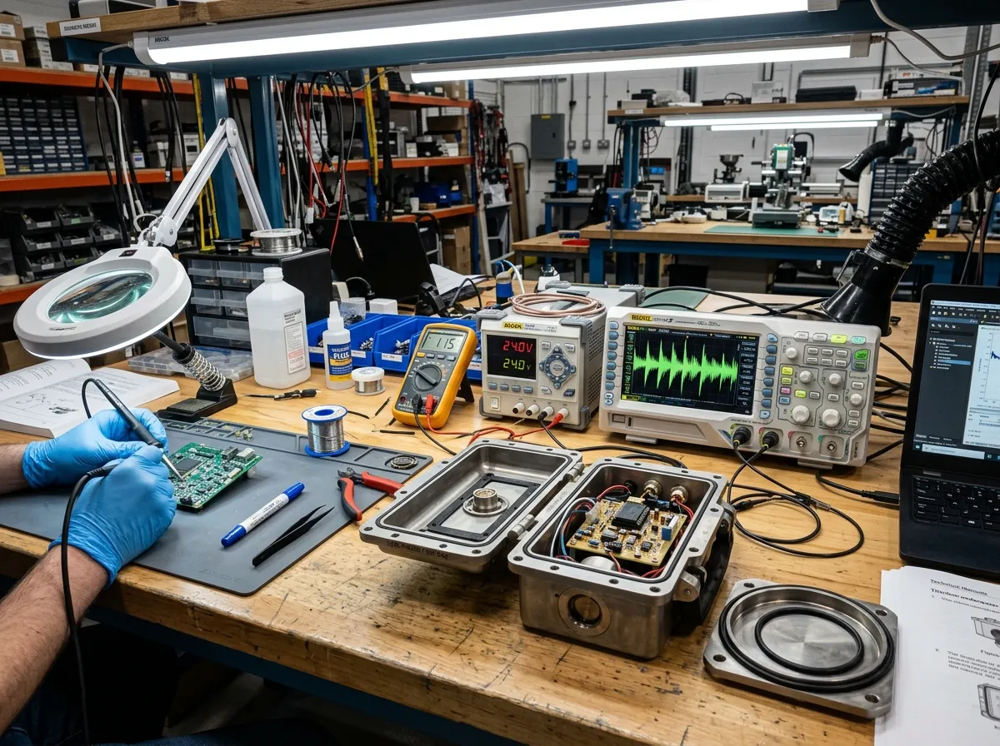
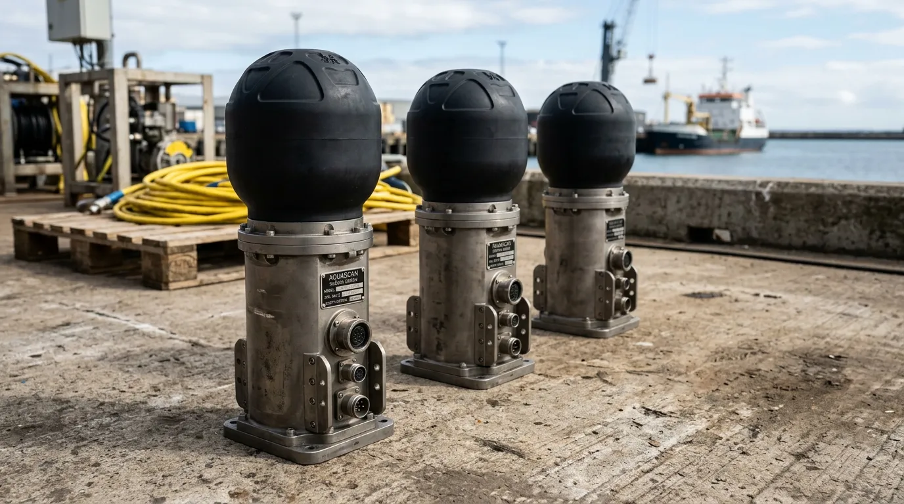

Pentland Tidal Energy Project
Deployed 12 Mark VI nodes directly beneath 1.5 MW tidal turbines. Maintained consistent 9.6 kbps telemetry through extreme cavitation noise and 10-knot spring tides over a continuous 14-month validation period.
In October 2021, maintenance crews at the Pentland Firth tidal array faced chronic telemetry blackouts: umbilical data cables connecting subsea generators to shore substations were grinding to copper scrap against sea-bed granite within six months of submersion. Radio frequencies cannot penetrate seawater, while standard commercial acoustic modems lost sync due to extreme acoustic noise generated by churning tidal rotors.
We recruited former Royal Navy acoustic warfare engineers from Faslane to rebuild the transmission stack. By porting naval frequency-hopping spread spectrum algorithms into heavy-gauge piezoceramic transducers, we eliminated multipath signal distortion caused by cavitation and surface wave chop.
Our hardware bypasses fragile physical tethers entirely. Subsea instruments transmit compressed acoustic telemetry bursts through the water column to surface buoys and coastal receivers across ranges up to eight kilometres. When catastrophic storms cut off surface vessels, our seabed buffer nodes store eighteen months of uninterrupted sensor telemetry at three thousand metres depth.

Our subsea communications hardware is ruggedised for rapid field deployment in high-salinity, high-pressure environments. The flagship Mark VI Benthic Buffer Node operates at 18 kHz with a 3,000 m depth rating, delivering 9.6 kbps throughput. Complementing the Mark VI is the Surface Relay Acoustic Buoy with integrated GSM/Iridium uplink, the High-Turbulence Transducer Array pushing a 120 dB source level, and the Acoustic Release Mooring Collar capable of a 5-tonne load release. Hardware unit costs span £4,800 to £18,500.

[Select Transceiver Hardware]Resilient data transmission is achieved through a structured 4-phase communications pipeline designed to survive high ambient noise and thermal layering. The process initiates with heavy sensor data compression, followed by frequency-hopping modulation across the 16–22 kHz band. The acoustic transmission burst is then executed, concluding with a cyclic redundancy check (CRC) receipt confirmation to ensure total data integrity before clearing the local buffer.
When evaluated against traditional Armoured Umbilicals, Optical Wet-Mate connectors, and Short-Range High-Frequency units, the Pentland Hydro-Packet standard demonstrates unmatched durability with zero physical failure points. Our deployment cost per kilometre is a fraction of armoured cabling. In an 8-knot current, our failure rate remains static at near-zero, whilst umbilicals degrade rapidly. With a maximum operating depth of 3,000 m and strictly scheduled minimal maintenance downtime, acoustic telemetry outperforms physical tethering in all turbulent parameters.
We provide scalable subsea communications from single-point monitors to regional arrays. The Single Node Test Kit includes two modems and a hydrophone for baseline acoustic evaluation. The Array Subnet Tier outfits 8–24 nodes with mesh routing capabilities for mid-scale installations. For government research bodies and commercial array operators, the Enterprise Infrastructure Package provides unlimited nodes paired with 24/7 telemetry support and priority field dispatch.
[Request Enterprise Contract]Deployed 12 Mark VI nodes directly beneath 1.5 MW tidal turbines. Maintained consistent 9.6 kbps telemetry through extreme cavitation noise and 10-knot spring tides over a continuous 14-month validation period.
Integrated acoustic transceiver arrays on autonomous benthic crawlers. Achieved uninterrupted data relay to surface support vessels across a 400 m thermocline barrier, bypassing the need for vulnerable optical tethers.
Utilised Array Subnet Tier for a deep-water oceanographic sensor grid. The store-and-forward buffer nodes successfully retained and transmitted 18 months of high-resolution temperature and salinity logs following a harsh winter surface disconnect.
Our frequency-hopping algorithms dynamically adjust the transmission carrier based on continuous ping-return analysis. This actively mitigates the signal refraction and shadow zones typically caused by sharp thermoclines.
Yes. All acoustic emissions are strictly calibrated to fall within EU and UK low-Sound Pressure Level (SPL) standards. The 16–22 kHz band minimises disruption while maintaining robust data penetration.
The Mark VI Buffer Node utilises custom-engineered lithium thionyl chloride (Li-SOCl2) packs. These deliver a verified 5-year operational lifespan at 4°C ambient seabed temperatures.
Absolutely. The Hydro-Packet Protocol supports secure, compressed over-the-water (OTW) firmware patches. This eliminates the necessity for costly ROV recovery operations merely to update node software.
The nodes feature modular end-cap interfaces supporting standard RS-232, RS-485, and CAN bus connections. The onboard processor automatically buffers and serialises the input for acoustic transmission.
Yes. The Acoustic Release Mooring Collar can be triggered via a highly encrypted, specific acoustic command. It initiates a galvanic burn-wire release, safely dropping the anchor weight for buoyant recovery.
Our Caithness depot facilitates direct commercial supply and rapid express freight for all hardware requisitions. Authorised operators receive priority technical support and deployment logistics planning.
Pentland Acoustic Telemetry WorksTelemetry Desk: +44 (0) 1955 600 000
VHF: Channel 16 / 72